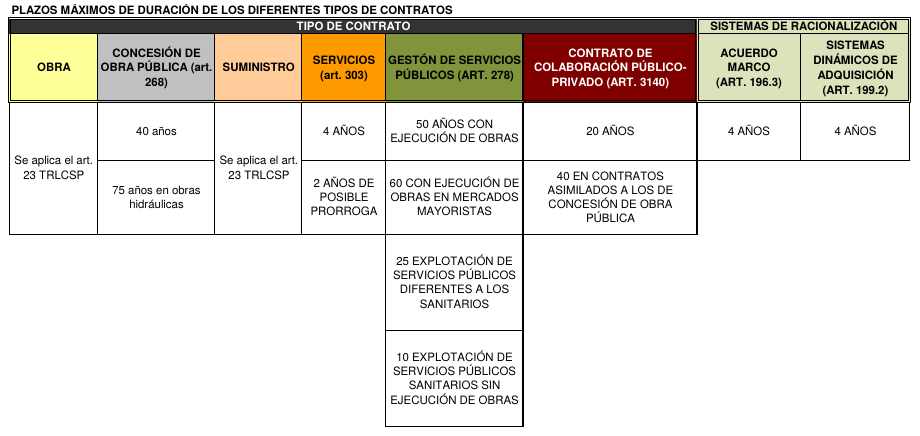
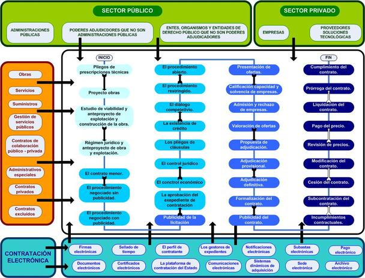
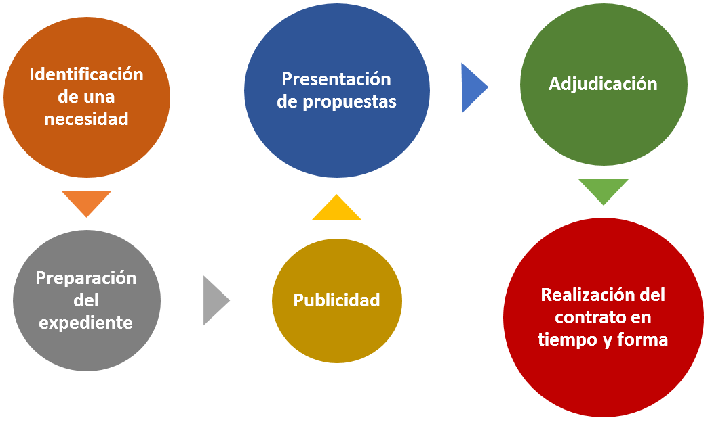
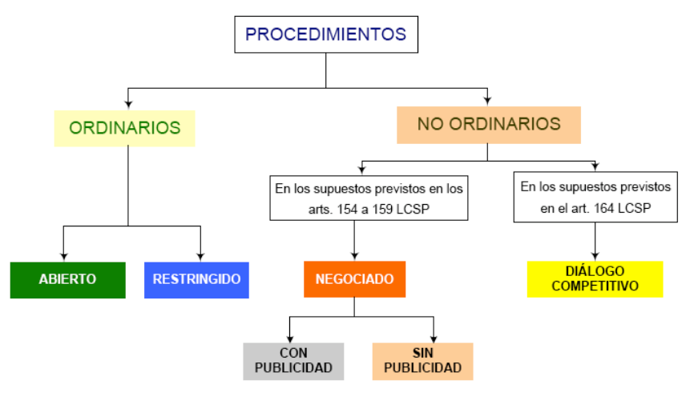
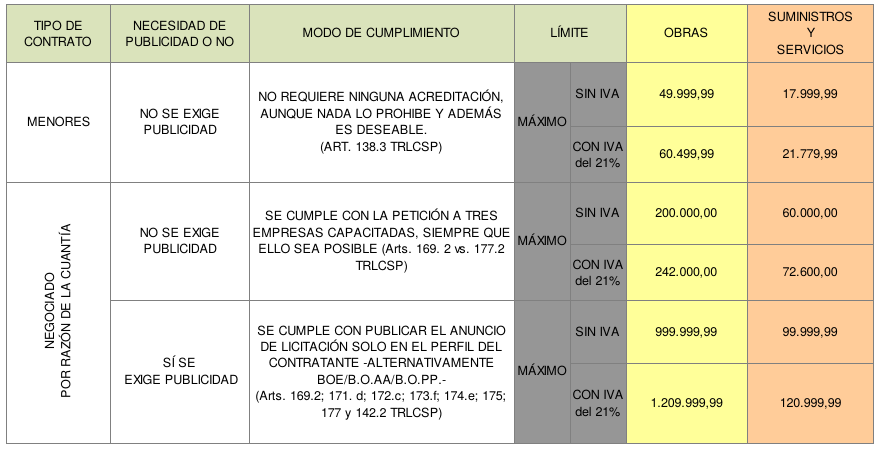
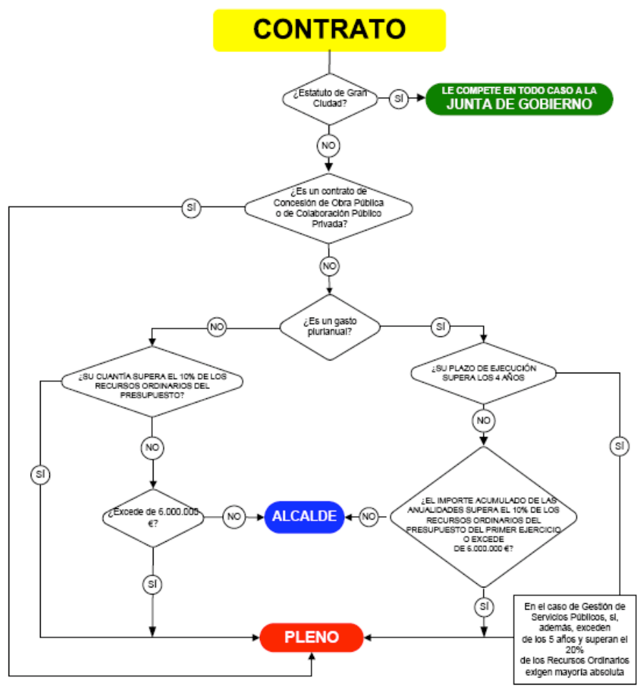

<!doctype html>
<html lang="en">
    <head>
        <meta charset="utf-8">
        <title>La Ley de Contratación Pública</title>
        <link rel="stylesheet" href="./css/reveal.css">
        <link rel="stylesheet" href="./css/theme/night.css" id="theme">
        <link rel="stylesheet" href="./css/highlight/zenburn.css">
        <link rel="stylesheet" href="./css/print/paper.css" type="text/css" media="print">
          <link rel="stylesheet" href="./assets/assets/css/customization.css">

    </head>
    <body>

        <div class="reveal">
            <div class="slides"><section  data-markdown><script type="text/template">


# Contratación Pública

Alfredo Sánchez Alberca  
[asalber@gmail.com](asalber@gmail.com)


</script></section><section  data-markdown><script type="text/template">
## Volumen de la contratación pública

> La contratación pública en España supone alrededor del 20% del PIB (200.000 millones €).

Y eso que está por debajo de la media europea.
</script></section><section ><section data-markdown><script type="text/template">
## Fundamentos jurídicos

> [Real Decreto Legislativo 3/2011, de 14 de noviembre, por el que se aprueba el texto refundido de la Ley de Contratos del Sector Público.](https://www.boe.es/buscar/doc.php?id=BOE-A-2011-17887)
</script></section><section data-markdown><script type="text/template">
## Otras leyes

> [Ley 31/2007, de 30 de octubre, sobre procedimientos de contratación en los sectores del agua, la energía, los transportes y los servicios postales.](https://www.boe.es/buscar/act.php?id=BOE-A-2007-18875)

> [Real Decreto 1098/2001, de 12 de octubre, por el que se aprueba el Reglamento general de la Ley de Contratos de las Administraciones Públicas.](https://www.boe.es/buscar/act.php?id=BOE-A-2001-19995)
</script></section></section><section  data-markdown><script type="text/template">
## Aspectos que aborda

- Título preeliminar:
  - Capítulo I: Ámbito de aplicación
  - Capítulo II: Tipos de contratos
- Libro I: Disposiciones generales y elementos estructurales de los contratos
- Libro II: Preparación de los contratos
- Libro III: Selección del contratista y adjudiación de los contratos
- Libro IV: Efectos, cumplimiento y extinción de los contratos
- Libro V: Organización administrativa para la gestión del contrato
</script></section><section  data-markdown><script type="text/template">
## Ámbito de aplicación

Poderes adjudicadores:
- Administraciones Públicas (AP)
- Entes del sector público sujetos a la Directiva 2004/18/CE.
- Entes del sector público que no sometidos a la anterior directiva.
</script></section><section  data-markdown><script type="text/template">
## Principios de la contratación pública

- Libertad de acceso a las licitaciones
- Publicidad y transparencia de de los procedimiento
- No discriminación e igualdad de trato entre los candidatos
- Libre competencia
</script></section><section  data-markdown><script type="text/template">
<!-- .slide: data-background="#6699cc" -->
# Tipos de Contratos
</script></section><section ><section data-markdown><script type="text/template">
## Tipos de contratos

- Contrato de obras
- Contrato de servicios
- Contrato de suministro
- Contrato de gestión de servicios públicos
- Contrato de concesión de obra pública
- Contrato de colaboración entre el sector público y privado
- Contratos mixtos
</script></section><section data-markdown><script type="text/template">
### Contrato de obras

Son contratos de obras aquellos que tienen por objeto la realización de una obra o la ejecución de alguno de los trabajos enumerados en el Anexo I del TRLCSP que responda a las necesidades especificadas por la entidad contratante.

Por «obra» se entenderá el resultado de un conjunto de trabajos de construcción o de ingeniería civil, destinado a cumplir por sí mismo una función económica o técnica, que tenga por objeto un bien inmueble.

Ejemplo: Construcción de una piscina cubierta.
</script></section><section data-markdown><script type="text/template">
## Contrato de concesión de obra pública

La concesión de obras públicas es un contrato que tiene por objeto la realización por el concesionario de algunas de las prestaciones relativas al contrato de obras, incluidas las de restauración y reparación de construcciones existentes, así como la conservación y mantenimiento de los elementos construidos, y en el que la contraprestación consiste, o bien únicamente en el derecho a explotar la obra, o bien en dicho derecho acompañado del de percibir un precio.

Ejemplo: Mantenimiento de la piscina.
</script></section><section data-markdown><script type="text/template">
## Contrato de suministros

Son contratos de suministro los que tienen por objeto la adquisición, el arrendamiento financiero, o el arrendamiento, con o sin opción de compra, de productos o bienes muebles. También se consideran contratos de suministro, los que tengan por objeto la adquisición y el arrendamiento de equipos y sistemas de telecomunicaciones o para el tratamiento de la información, sus dispositivos y programas, y la cesión del derecho de uso de estos últimos.

Ejemplo: Equipos informáticos.
</script></section><section data-markdown><script type="text/template">
## Contratos de servicios

Son contratos de servicios aquéllos cuyo objeto son prestaciones de hacer consistentes en el desarrollo de una actividad o dirigidas a la obtención de un resultado distinto de una obra o un suministro. A efectos de aplicación de esta Ley, los contratos de servicios se dividen en las categorías enumeradas en el Anexo II del TRLCSP.
Véase respecto a la diferencia existente entre los contratos de
gestión de servicios públicos y los de servicios el informe 04/2008, de 28 de julio.

Ejemplo: Mantenimiento y reparación de instalaciones. Talleres de formación o actividades culturales.
</script></section><section data-markdown><script type="text/template">
## Contratos de servicios (características distintivas)

- El contratista no asume la organización de la prestación del servicio.
- El contratista no asume el riesgo de la explotación.
</script></section><section data-markdown><script type="text/template">
## Contrato de gestión de servicios públicos

El contrato de gestión de servicios públicos es aquél en cuya virtud una AP encomienda a una persona, natural o jurídica, la gestión de un servicio cuya prestación ha sido asumida como propia de su competencia por la Administración encomendante.

Tipos:
- Concesión, por la que el empresario gestionará el servicio a su propio riesgo y ventura.
- Gestión interesada, en cuya virtud la AP y el empresario participarán en los resultados
de la explotación del servicio en la proporción que se establezca en el contrato.
- Concierto con persona natural o jurídica que venga realizando prestaciones análogas a las que
constituyen el servicio público de que se trate.
- Sociedad de economía mixta en la que la AP participe, por sí o por medio de una entidad pública, en concurrencia con personas naturales o jurídicas.

Ejemplo: Gestión del suministro agua de uso urbano, gestión del transporte urbano.
</script></section><section data-markdown><script type="text/template">
## Contrato de gestión de servicios públicos (Características distintivas)

- Suponen la explotación de un servicio.  
No es posible respecto de los servicios que impliquen el ejercicio de autoridad, que es propio de la AP.
- Implican la transferencia de los riesgos económicos de su gestión de la AP al empresario privado.
- Gestión integral.
</script></section><section data-markdown><script type="text/template">
## Contrato de colaboración entre el sector público y el privado

Son contratos de colaboración entre el sector público y el sector privado aquellos en que una AP encarga a una entidad de derecho privado, por un período determinado (en función de la duración de la amortización de las inversiones o de las fórmulas de financiación que se prevean), la realización de una actuación global e integrada que, además de la financiación de inversiones inmateriales, de obras o de suministros necesarios para el cumplimiento de determinados objetivos de servicio público o relacionados con actuaciones de interés general, comprenda alguna de las siguientes prestaciones:
</script></section><section data-markdown><script type="text/template">
- La construcción, instalación o transformación de obras, equipos, sistemas, y productos o bienes complejos, así como su mantenimiento, actualización o renovación, su explotación o su gestión.
- La gestión integral del mantenimiento de instalaciones complejas.
- La fabricación de bienes y la prestación de servicios que incorporen tecnología específicamente desarrollada con el propósito de aportar soluciones más avanzadas y económicamente más ventajosas que las existentes en el mercado.
- Otras prestaciones de servicios ligadas al desarrollo por la Administración del servicio público o actuación de interés general que le haya sido encomendado.
-

_Sólo podrán celebrarse este tipo de contratos cuando previamente se haya puesto de manifiesto que otras fórmulas alternativas de contratación no permiten la satisfacción de las finalidades públicas._

Este tipo de contratos se adjudicará necesariamente por procedimiento de diálogo competitivo (art. 180.3).
</script></section><section data-markdown><script type="text/template">
## Mixtos

Cuando un contrato contenga prestaciones correspondientes a otro u otros de distinta clase se atenderá en todo caso, para la determinación de las normas que deban observarse en su adjudicación, al carácter de la prestación que tenga más importancia desde el punto de vista económico.
</script></section></section><section  data-markdown><script type="text/template">
## Duración máxima de los contratos


</script></section><section  data-markdown><script type="text/template">
<!-- .slide: data-background="#6699cc" -->
# Procedimiento de Contratación
</script></section><section ><section data-markdown><script type="text/template">
## Fases del procedimiento de contratación pública



</script></section><section data-markdown><script type="text/template">

</script></section></section><section ><section data-markdown><script type="text/template">
## Procedimientos de contratación

- Ordinario
  - Abierto
  - Restringido
- No ordinario
  - Negociado (supuesto de los art. 170 a 175)
    - Con publicidad
    - Sin publicidad
  - Diálogo competitivo
</script></section><section data-markdown><script type="text/template">
## Procedimientos de contratación


</script></section></section><section ><section data-markdown><script type="text/template">
## Importe máximo de los contratos menores y negociados


</script></section><section data-markdown><script type="text/template">
## Competencia para contratar


</script></section></section><section  data-markdown><script type="text/template">
<!-- .slide: data-background="#6699cc" -->
# Control de la Contratación Pública
</script></section><section  data-markdown><script type="text/template">
[](https://contrataciondelestado.es/) [](http://www.obcp.es/) [](http://quiencobralaobra.es/)
</script></section><section  data-markdown><script type="text/template">
## Más información
</script></section></div>
        </div>

        <script src="./lib/js/head.min.js"></script>
        <script src="./js/reveal.js"></script>

        <script>
            function extend() {
              var target = {};
              for (var i = 0; i < arguments.length; i++) {
                var source = arguments[i];
                for (var key in source) {
                  if (source.hasOwnProperty(key)) {
                    target[key] = source[key];
                  }
                }
              }
              return target;
            }

            // Optional libraries used to extend on reveal.js
            var deps = [
              { src: './lib/js/classList.js', condition: function() { return !document.body.classList; } },
              { src: './plugin/markdown/marked.js', condition: function() { return !!document.querySelector('[data-markdown]'); } },
              { src: './plugin/markdown/markdown.js', condition: function() { return !!document.querySelector('[data-markdown]'); } },
              { src: './plugin/highlight/highlight.js', async: true, callback: function() { hljs.initHighlightingOnLoad(); } },
              { src: './plugin/zoom-js/zoom.js', async: true },
              { src: './plugin/notes/notes.js', async: true },
              { src: './plugin/math/math.js', async: true }
            ];

            // default options to init reveal.js
            var defaultOptions = {
              controls: true,
              progress: true,
              history: true,
              center: true,
              transition: 'default', // none/fade/slide/convex/concave/zoom
              dependencies: deps
            };

            // options from URL query string
            var queryOptions = Reveal.getQueryHash() || {};

            var options = {};
            options = extend(defaultOptions, options, queryOptions);
        </script>


        <script>
            Reveal.initialize(options);
        </script>
    </body>
</html>
